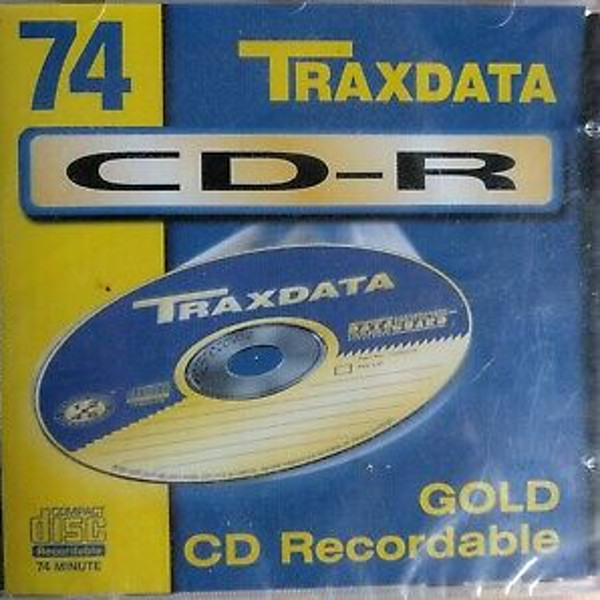
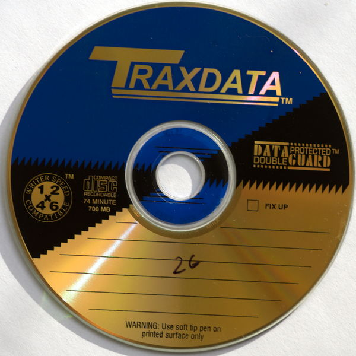
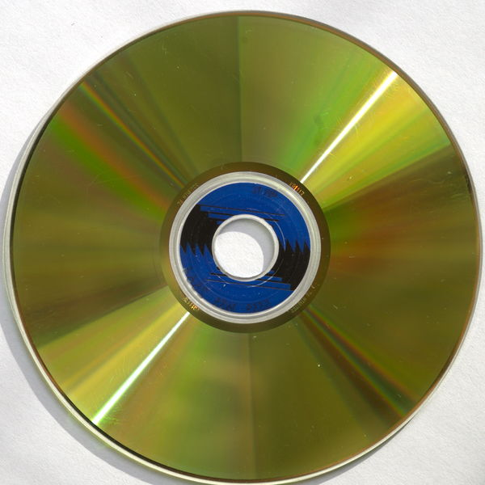

<div style="clear:both;display:table;">

<div style="padding:5px;width:30%;float:left;">
CD-R<BR>
Layers: 1 (650MB per layer)<BR>
Manufacturer: Kodak<BR>
ATIP: 97m27s45f<BR>
Type: Gold/Gold<BR>
Capacity: 333376 sectors / 650 MB<BR>
<BR>
Burned on: 1996<BR>
Burner: ?<BR>
Tested on: LG BH16NS55 (firmware WH16NS58 1.V5)<BR>
</div>


<div style="float:left;padding:5px;width:15%;">
<A HREF="01.jpg" TARGET="_blank"></img></A>
</div>

<div style="float:left;padding:5px;width:15%;">
<A HREF="02.jpg" TARGET="_blank"></img></A>
</div>

<div style="float:left;padding:5px;width:15%;">
<A HREF="03.jpg" TARGET="_blank"></img></A>
</div>

</div>